We use an auxiliary judgment
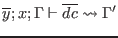
, expressing the enrichment of 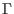
with the types of the datatype constructors
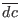
, when they are known to belong to datatype  with type parameters
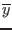
.
with type parameters
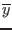
.
We presuppose the existence of a function
 , where
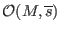
implements the
declaration by producing a context with the appropriate entry for each available component of module
, where
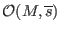
implements the
declaration by producing a context with the appropriate entry for each available component of module  with signature items
with signature items
 . Where possible,
. Where possible,
 uses ``transparent'' entries (e.g., an abstract type 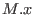
is mapped to
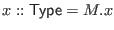
), so that the relationship with
uses ``transparent'' entries (e.g., an abstract type 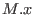
is mapped to
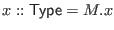
), so that the relationship with  is maintained. A related function
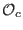
builds a context containing the disjointness constraints found in
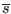
.
We write
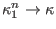
as a shorthand, where
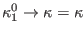
and
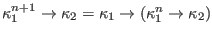
. We write
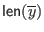
for the length of vector
of variables.
is maintained. A related function
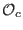
builds a context containing the disjointness constraints found in
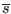
.
We write
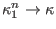
as a shorthand, where
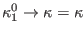
and
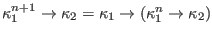
. We write
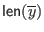
for the length of vector
of variables.